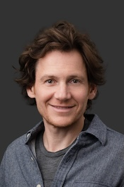

The University of Tokyo (Japan)
Title: Understanding HOW and WHY Humans Act: Benchmarking Fine-Grained and Causal Video Reasoning
Understanding human activities in video has long been a central challenge in computer vision. Yet most benchmarks and models address primarily the surface level — recognizing what action is performed or what objects are present. For systems that must support humans in real-world tasks — assisting with manual work, assessing skills, or anticipating future behavior — this is insufficient. We need systems that can answer how and why.
In this talk, I present two complementary benchmarks that push video understanding beyond recognition toward deeper comprehension. The first targets the how: how hands manipulate objects, how manipulation styles vary, and how objects physically change as a result. Built on Ego4D across 112 real-world domains, it provides 11.1K human-verified QA pairs spanning six question types — from action and process to part-level state changes — along with 10.3K segmentation masks. The second targets the why: can a model identify and spatiotemporally ground the causal chain explaining why a video event occurred? With 2,066 causal questions over 1,015 videos, it requires localizing cause-and-effect evidence with bounding-box precision across time.
Evaluating state-of-the-art vision-language models on both benchmarks reveals a consistent finding: models fail not at recognition, but at grounded spatiotemporal reasoning — about dynamics, spatial relationships, and causal structure. Closing this gap is essential for deeper human activity understanding, with implications for skill assessment, human-robot collaboration, and embodied AI.
National University of Singapore (Singapore)
Title: Grounding Humans in the 4D World with Contact
Monocular methods can recover accurate human bodies, but grounding them into the world remains challenging: bodies float, penetrate the scene, and feet slide across the ground. This talk argues that contact is the missing constraint, and follows how we have learned to exploit it, step by step. Humans first serve as a metric for the world, calibrating camera scale and constraining bundle adjustment. Contact then becomes an explicit correspondence between human and object surfaces, solved with optimal transport. Finally, contact is learned inside a feed-forward 4D reconstruction model and extend it to objects. The talk will close with open questions on moving from static contact to dynamics, where contact forces, momentum, and motion come together.
LINE Yahoo (Japan)
Title: Motion on Demand: Understanding, Controlling, and Generating Human Movement
In production workflows, a virtual character may need to follow a precise path, perform actions in a specified order, and move seamlessly between individual activities and interactions with others. These requirements motivate our research into developing practical human motion systems. In this talk, I will present our group’s work on understanding and generating human motion, showing how desired functionalities have shaped our research questions and methodological choices. I will discuss how the need to interpret user intent and action order motivates motion–language alignment, how precise spatial control leads to methods for enforcing constraints during generation, and how ongoing activities and social interactions motivate causal and streaming approaches to motion generation. Through these examples, I will illustrate how practical requirements guide the development of motion models toward greater controllability, temporal coherence, and efficiency, supporting their use in animation tools and interactive virtual humans.
National University of Singapore (Singapore)
Abstract will be added soon.

Toyota Technological Institute at Chicago (USA)
Abstract will be added soon.
The University of Hong Kong (Hong Kong)
Abstract will be added soon.